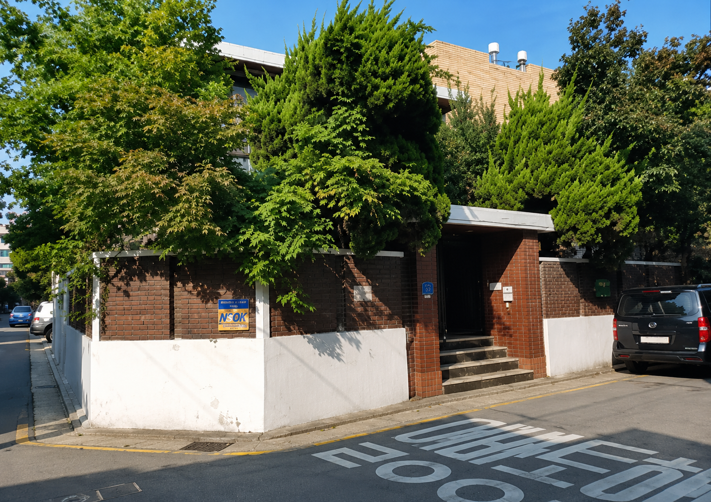
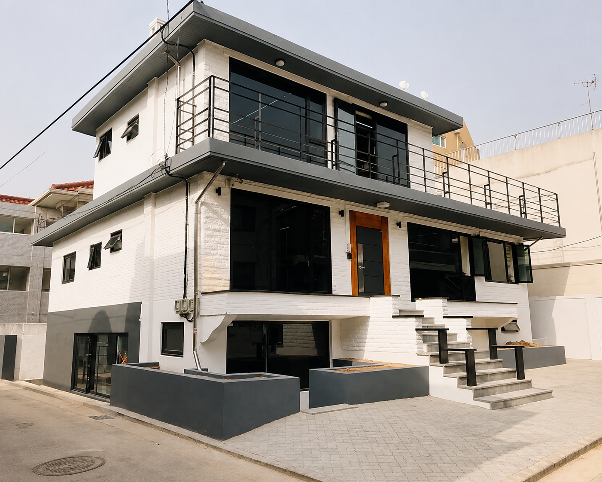
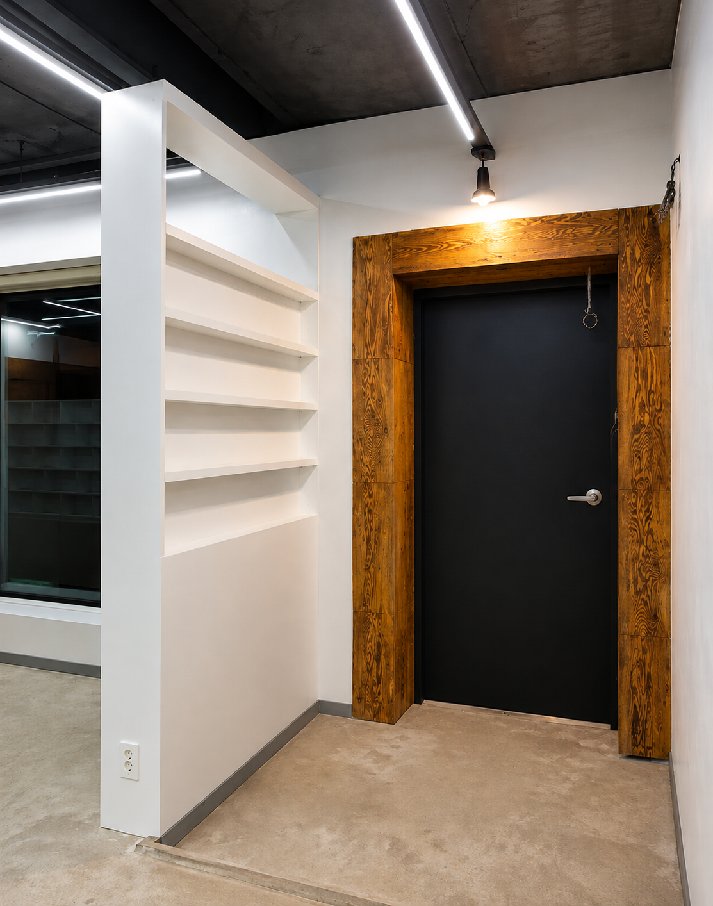
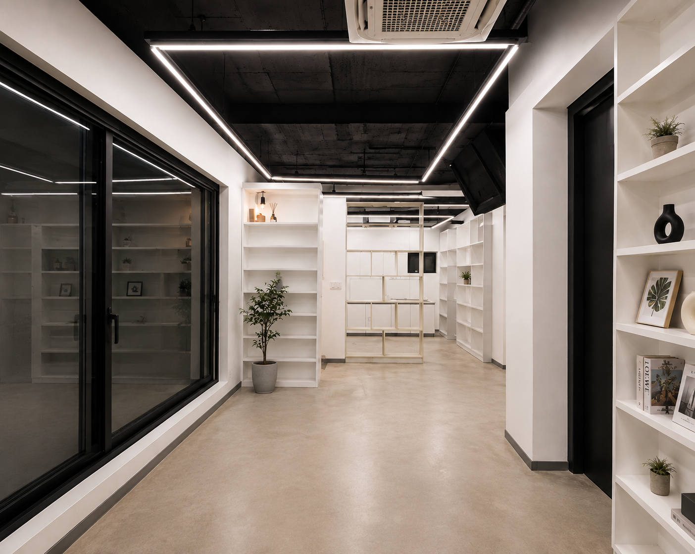
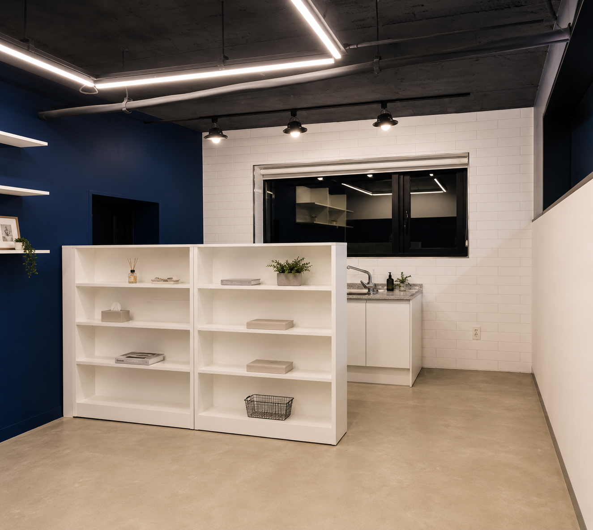
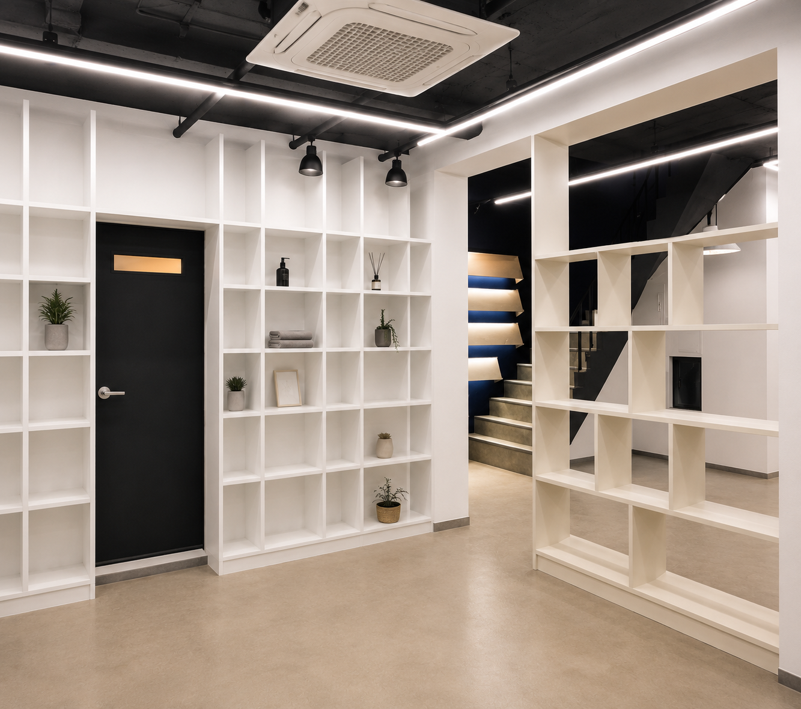
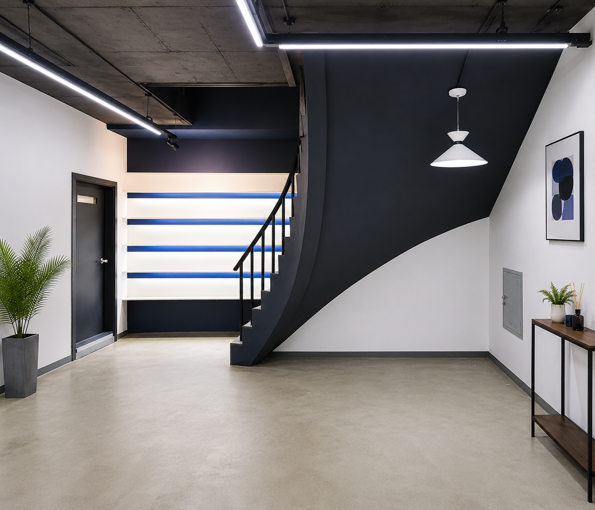
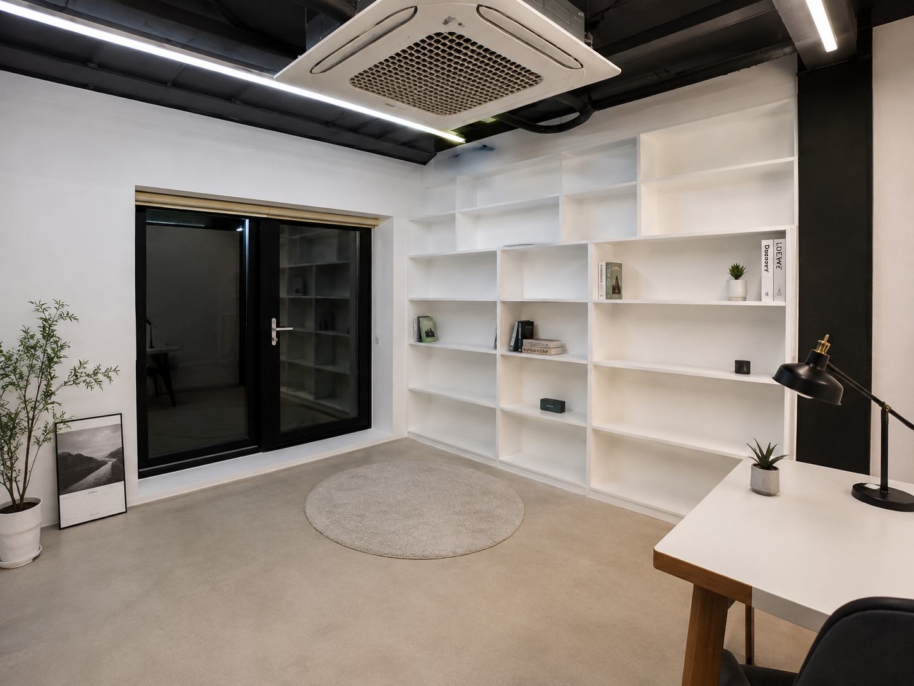
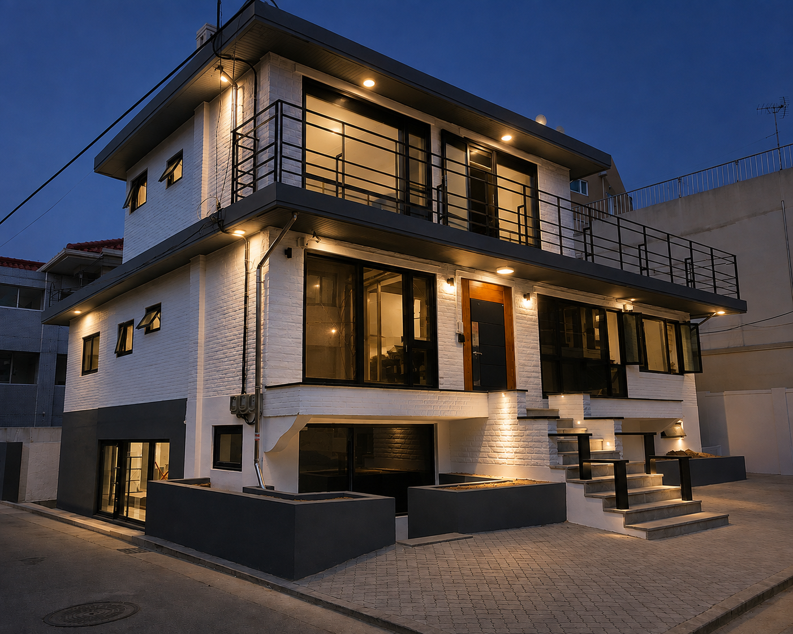

단독주택 대수선
노후된 2층 단독주택의 외관과 내부 동선을 재구성해 출판사 사옥으로 완성한 업무공간 리모델링
오래된 주택을 출판사의 새로운 업무공간으로 바꾸었습니다
이번 프로젝트는 노후된 2층 단독주택을 출판사 사옥으로 전환한 대수선 및 리모델링 공사입니다. 주거용으로 구성되어 있던 기존 공간을 사무실의 업무 방식에 맞춰 재구성하고, 외관부터 현관, 사무공간, 회의실과 탕비실, 계단, 2층 업무공간까지 하나의 흐름으로 정리했습니다.
건물을 가리고 있던 과실나무를 정리하고 담장을 철거해 외부 시야를 넓혔습니다. 넓은 블랙 창호와 2층 금속 테라스, 외벽 직부등을 적용해 출판사의 개성과 안정감이 함께 느껴지는 사옥의 인상을 완성했습니다.


사옥의 첫인상을 결정하는 현관을 정돈했습니다
기존 현관은 어두운 체리색 신발장과 중문, 바닥 마감으로 인해 좁고 무거운 인상이 강했습니다. 불필요한 요소를 철거한 뒤 단열 방화문과 낙엽송 마감 문틀을 적용해 출입 공간의 기능성과 디자인을 함께 개선했습니다.
바닥은 에폭시로 깔끔하게 정리하고 조명을 더해 소재의 질감이 자연스럽게 드러나도록 구성했습니다. 외부에서 내부 사무공간으로 이어지는 첫 장면이 단정하고 신뢰감 있게 보이도록 마감의 연결과 비례를 세심하게 조정했습니다.

거실과 작은방을 연결해 개방적인 사무공간을 만들었습니다
현관을 기준으로 우측의 거실과 인접한 작은방은 직원들이 함께 사용하는 1층 사무공간으로 재구성했습니다. 주거 공간의 분절된 구조를 정리해 시야와 이동 동선을 넓히고, 여러 명이 함께 일하기 편한 개방형 업무공간으로 전환했습니다.
실내는 화이트 톤 도장으로 마감해 기존의 어둡고 답답한 분위기를 덜어냈습니다. 자연광과 조명이 공간 전체에 고르게 퍼지도록 구성해 업무 집중도와 쾌적함을 함께 고려했습니다.

기존 주방을 회의와 휴식을 위한 복합공간으로 재구성했습니다
기존 주방이 있던 자리는 회의실과 탕비실로 새롭게 계획했습니다. 탕비 공간은 백색 유광 면취 타일과 레일 펜던트 조명을 적용해 관리가 편하면서도 밝고 정돈된 분위기가 유지되도록 마감했습니다.
회의실과 탕비실 사이에는 접이식 이동형 수납 파티션을 맞춤 제작했습니다. 많은 책을 보관해야 하는 출판사의 특성을 반영해 수납과 공간 분리 기능을 동시에 확보했습니다. 회의실 한쪽 벽은 블루 계열로 도장해 업무공간에 산뜻한 포인트를 더했습니다.

업무 동선 속에 기능 공간과 수납을 자연스럽게 배치했습니다
1층에는 두 곳의 화장실을 유지해 다수의 직원이 사용하는 사옥의 편의성을 확보했습니다. 사진 속 화장실은 타공 도어를 적용해 주변 벽면과 조화를 이루면서도 공간의 위치가 명확하게 구분되도록 했습니다.
기존 안방 출입문은 철거하고, 외부 사무공간과의 경계를 도서관형 책장 파티션으로 새롭게 구성했습니다. 벽을 세워 공간을 완전히 막기보다 출판사에 필요한 도서 수납 기능을 더해 개방감과 영역 구분을 함께 해결했습니다.

이동 공간을 출판사의 정체성을 보여주는 전시공간으로 바꾸었습니다
2층으로 이어지는 기존 원목 계단은 기본 틀을 활용하면서 미장과 에폭시 마감으로 표면을 새롭게 정리했습니다. 계단 난간은 군더더기 없는 금속 디자인으로 교체하고 블랙 도장을 적용해 공간 전체의 인상을 선명하게 잡았습니다.
계단 정면 벽에는 출판사의 대표 도서를 전시할 수 있는 전시 패널을 제작하고 간접조명을 더했습니다. 단순히 층을 연결하는 통로가 아니라 방문객에게 출판사의 콘텐츠와 브랜드를 자연스럽게 소개하는 작은 갤러리로 완성했습니다.

채광과 수납을 개선한 2층 사무공간
2층의 기존 작은방 역시 출판사 직원들이 사용하는 사무공간으로 전환했습니다. 벽면에는 업무 자료와 책을 효율적으로 보관할 수 있는 맞춤 책장을 설치해 제한된 면적을 실용적으로 활용했습니다.
기존 창은 더 크게 시공해 자연광이 충분히 들어오도록 하고, 시야가 확장되어 공간이 실제보다 넓고 쾌적하게 느껴지도록 구성했습니다. 1층과 동일한 밝은 마감 흐름을 이어가면서 층별 공간의 통일감을 유지했습니다.

노후 단독주택, 출판사의 새로운 사옥으로 완성되었습니다
주택의 흔적은 존중하되 업무공간에 맞지 않는 구조와 마감은 과감하게 정리했습니다. 열린 외관과 밝은 사무공간, 책을 위한 맞춤 수납, 브랜드를 보여주는 전시 요소가 하나의 흐름으로 이어지도록 계획했습니다.
낮에는 넓어진 창호와 정돈된 외관이 건물의 개방감을 보여주고, 밤에는 외벽 직부등과 실내 조명이 블랙 창호와 금속 테라스의 선을 강조해 출판사 사옥만의 인상을 더욱 선명하게 드러냅니다.

이번 대수선 공사의 핵심
열린 인상으로 바꾼 사옥 외관
건물을 가리던 수목과 담장을 정리하고 블랙 창호, 금속 테라스, 외벽 조명으로 출판사 사옥의 새로운 얼굴을 완성했습니다.
주거공간을 업무공간으로 재구성
거실과 방, 주방을 사무실과 회의실, 탕비실로 전환해 직원 중심의 동선과 개방적인 업무환경을 만들었습니다.
출판사에 맞춘 수납과 파티션
도서 보관량과 실제 사용방식을 고려해 이동형 수납 파티션, 책장형 파티션, 맞춤 책장을 제작했습니다.
공간에 담아낸 출판사의 정체성
대표 도서를 전시하는 계단 전시벽과 조명 계획을 통해 방문객에게 브랜드를 자연스럽게 전달하도록 구성했습니다.
건물의 가능성을 읽고, 새로운 쓰임을 설계합니다.
디자인소통은 공간의 목적과 사용방식을 먼저 이해한 뒤 디자인, 맞춤 제작, 시공과 마감까지 전 과정을 세심하게 관리합니다.
※ 본 포트폴리오의 이미지는 실제 시공 완료 후 촬영한 사진입니다. 일부 이미지는 촬영 환경에 따라 밝기·색감 및 주변 요소를 보정하여 실제 시공 결과를 보다 명확하게 전달하고 있습니다.